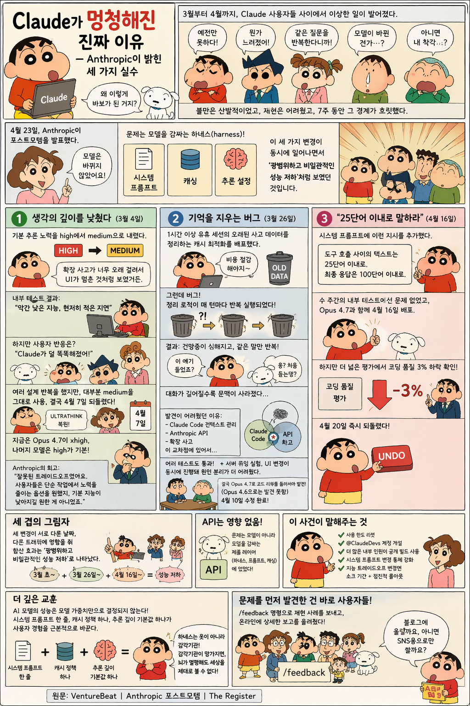

Executive Summary
From March through April, Claude users reported widespread performance degradation. On April 23, Anthropic published a postmortem. The model weights had not changed. Three modifications to the harness — the system prompt, caching logic, and reasoning effort setting — had been deployed at different times, to different traffic slices. Individually, each was minor. Together, they produced what looked like "broad, inconsistent degradation."
This incident demonstrates that an AI model's performance is not determined by its weights alone. A single line in a system prompt, a caching policy, a default reasoning depth — any one of these can fundamentally alter the user experience.
A harness is not a model's clothing. It is the model's sensory apparatus. When the senses break, a perfectly healthy brain cannot perceive the world. And it was users, not internal testing, who noticed.
Here are the key numbers from this incident at a glance.
Duration of issues (3/4 - 4/20)
Simultaneous harness changes
Coding quality drop (verbosity limit)
API users affected (product layer only)

They Turned Down the Thinking
On March 4, Claude Code's default reasoning effort was lowered from high to medium. The goal was to reduce UI latency. Users noticed almost immediately.
"Claude got dumber."
Medium means thinking less. Responses come faster, but accuracy drops on complex problems. In the tradeoff between speed and intelligence, Anthropic chose speed. Users wanted intelligence.
It was reverted on April 7. Currently, Opus 4.7 defaults to xhigh, and other models default to high.
Anthropic's own assessment: "This was the wrong tradeoff."
The Memory-Erasing Bug
On March 26, a bug shipped during a cache optimization deployment. A cleanup routine meant to run once started running on every turn. The result was amnesia and repetition. Claude would repeat itself and forget context from just moments before.
This bug passed code review, unit tests, end-to-end tests, automated validation, and internal dogfooding — every gate in the pipeline. It was finally caught by an Opus 4.7 code review. The 4.6 model missed it entirely. A smarter model caught a subtler bug.
It was fixed on April 10.
"Keep It Under 25 Words"
On April 16, a system prompt change went live. The new instruction: "Keep responses between tool calls under 25 words, and final responses under 100 words."
The intent was to trim unnecessary chatter between tool calls. It passed weeks of internal testing. But once deployed at scale, coding quality dropped by 3%.
Telling a model to speak less made it think less. Compressing the output compressed the reasoning.
It was reverted on April 20.
Three Shadows, One Darkness
The three changes were deployed on different dates, to different traffic percentages. Each was a small issue on its own. But their combined effect manifested as "inconsistent degradation" — the most confusing kind of outage. Some users noticed problems. Others were fine. Pinpointing the cause was nearly impossible.
The API was unaffected. The problems lived entirely in the product layer — the harness, the system prompt, the caching logic. The same model that worked perfectly via API was misbehaving in the product.
Below is the full timeline of events.
| Date | Event | Impact |
|---|---|---|
| Mar 4 | Reasoning effort high → medium | Claude Code intelligence drop |
| Mar 26 | Cache cleanup bug deployed | Amnesia, repetition |
| Apr 7 | Reasoning effort reverted | Partial recovery |
| Apr 10 | Cache bug fixed | Memory restored |
| Apr 16 | 25-word limit deployed | 3% coding quality drop |
| Apr 20 | 25-word limit reverted | Full recovery |
| Apr 23 | Postmortem published | Usage limits reset |
What This Incident Reveals
Anthropic announced concrete remediation. They reset usage limits for affected users and launched @ClaudeDevs, a channel for real-time product change announcements. They committed to dogfooding public builds internally and tightening controls around system prompt changes.
But the deeper lesson is not about organizational response. It is about structural truth.
A harness is not a model's clothing. It is the model's sensory apparatus. When the senses break, a perfectly healthy brain cannot perceive the world.
The system prompt determines how a model perceives the world. The cache determines how it retains memory. The reasoning effort setting determines how deeply it thinks. All three sit outside the model weights, yet the user experience is defined by them.
And it was users who discovered the problem. Internal testing, automated validation, code review — none of these caught the combined effect of three simultaneous changes. It was everyday practitioners, running real workflows, who detected the subtle degradation. The people who use the model know the model better than the people who build it. An old truth, repeated once more.
References
- Anthropic Engineering — April 23 Postmortem — Official postmortem on Claude performance degradation causes and response
- VentureBeat — Mystery solved: Anthropic reveals changes to Claude's harnesses — Coverage of harness changes as the root cause of degradation
- The Register — Anthropic says it has fixed the issues — Coverage of fixes and preventive measures